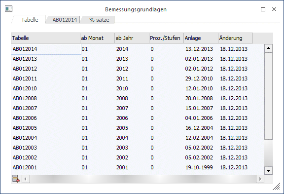
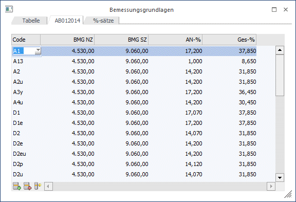
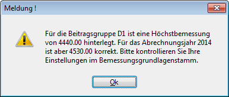
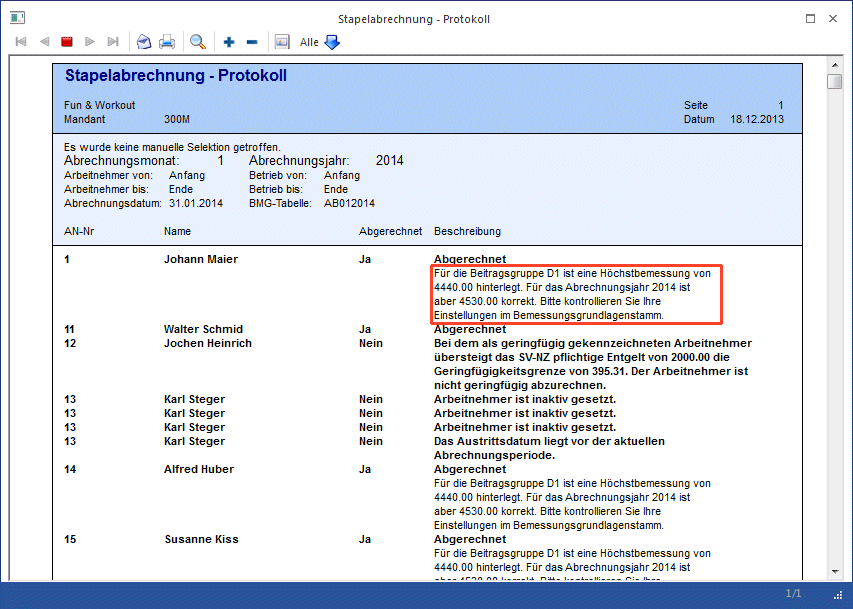
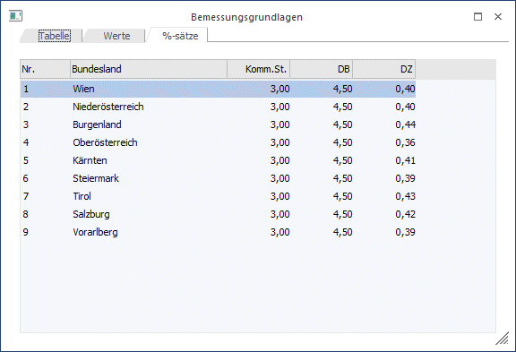
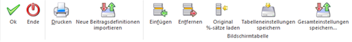
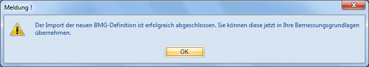
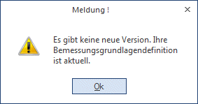

In den Bemessungsgrundlagen werden die wichtigsten Daten für die Lohnverrechnung gespeichert:
ü Bemessungsgrundlagen
ü Beitragsgruppentexte
ü Prozentsätze
Im Programm WinLine START kann im Menüpunkt
1 Optionen
1 LOHN Parameter
entschieden werden, ob die Bemessungsgrundlagen pro Mandant oder zentral für alle Mandanten verwalten werden soll.
Unabhängig davon, welche Einstellung vorgenommen wurde, können die Bemessungsgrundlagen und Beitragsgruppen im Menüpunkt
1 Stammdaten
1 Bemessungsgrundlagen
gewartet werden. Änderungen werden immer in den Mandant laut Einstellung rückgeschrieben.
Das Fenster ist in 3 Register unterteilt. Im Register "Tabelle" werden die Tabellen selbst gewartet. Im Register "Tabellenname" werden die Beitragsgruppen und ihre Bemessungsgrundlagen selbst gespeichert (bis inkl. Abrechnungsjahr 2018 ab 2019 werden die Bemessungsgrundalgen über das Tarifgruppensystem verwaltet). Im Register "%-sätze" können die Zusatzprozente (KommSt. DB und DZ) pro Bundesland hinterlegt werden.
Eingabefelder im Register Tabelle:

Ø Tabelle
Eingabe des Tabellennamen. Der Tabellenname dient zur Identifizierung bzw. zur Bearbeitung. Mit dem hier eingegebenen Namen wird dann, sobald die Tabelle einmal gespeichert wurde, auch das 2. Register benannt. Die Tabelle wird so sortiert, dass die aktuelle Tabelle immer an erster Stelle steht.
Ø ab Monat
Aus der Auswahllistbox wird das Monat gewählt, ab dem diese Tabelle seine Gültigkeit hat. Aufgrund dieser Einstellung verwendet das Programm z.B. bei Rollungen immer die richtige Tabelle.
Ø ab Jahr
Hier wird 4stellig die Jahreszahl eingetragen, ab dem die Tabelle gültig ist.
Beispiel:
Die GKK beschließt, den KU-Beitrag mit 1.Juli 2000 zu ändern. Das bedingt, das bis zum 30. Juni die alten Werte verwendet werden müssen. Daher muss eine Tabelle angelegt werden, die "AB JULI" gilt.
Ø Proz./Stufen
Aus der Auswahllistbox kann gewählt werden, ob die Berechnung der SV nach Stufen oder nach Prozenten erfolgen soll.
Ø Anlage
Hier wird das Datum, an dem die Tabelle angelegt wurde, angezeigt.
Ø Änderung
Hier wird das Datum, an dem die Tabelle das letzte Mal geändert wurde, angezeigt.
Eingabefelder im Register Tabellenname:
Hinweis:
Das Register Tabellenname kann nur bis inkl. 2019 angewählt werden. Ab dem Abrechnungsjahr 2020 ist dieses ausgegraut, da die Verwaltung der Bemessungsgrundlagen über das Tarifsystem erfolgt.

Je nachdem, in welcher Zeile des ersten Registers man sich befindet, wird im 2. Register die entsprechende Tabellenbezeichnung (z.B. SYSTEM12) angezeigt.
Durch Drücken der Tastenkombination STRG + Bild-nach-Unten gelangt man in die Eingabe-Tabelle, wo die Beitragsgruppen und deren Bemessungsgrundlagen und Prozente verwaltet werden.
Ø Code
Aus der Auswahllistbox muss die Beitragsgruppe ausgewählt werden, mit der Abrechnungen durchgeführt werden sollen. Es können keine frei definierbaren Beitragsgruppen verwendet werden, da die Beitragsgruppen von der GKK vorgegeben werden. Die Liste der Beitragsgruppen kann nur von MESONIC gewartet werden. Sobald eine Beitragsgruppe ausgewählt und bestätigt wird, werden die nachfolgenden Feldern mit den aktuell gültigen Werten vorbesetzt und können ggf. noch verändert werden. Das gilt sowohl für die Beitragsgruppen als auch für die Nebenbeiträge (KU, WF etc.)
Ø BMG NZ
Hier wird die Höchstbemessungsgrundlage für Normalzahlungen der entsprechenden Beitragsgruppe eingetragen.
Ø BMG SZ
Hier wird die Höchstbemessungsgrundlage für Sonderzahlungen der entsprechenden Beitragsgruppe eingetragen. Im Normalfall ist die BMG SZ das doppelte der MBG NZ.
Ø AN %
Eingabe des Arbeitnehmerprozentsatzes der Beitragsgruppe die sich aus den Prozentsätzen für
ü Krankenversicherung
ü Unfallversicherung
ü Pensionsversicherung und
ü Arbeitslosenversicherung
zusammensetzt.
Ø Ges-%
Eingabe des Gesamtprozentsatzes der Beitragsgruppe
Die Zulagen wie KU, WF, IE etc. können an beliebigen Positionen untergebracht werden, durch das Speichern der Tabelle werden diese allerdings immer am Ende der Tabelle platziert.
Buttons:
Ø Einfügen
Damit kann eine neue Beitragsgruppe eingefügt werden, wobei die aktive Zeile nach unten verschoben wird.
Ø Entfernen
Durch Anklicken des Entfernen-Buttons wird die aktive Zeile gelöscht.
Ø Original %-sätze/Höchstbemessungen laden
Damit werden die aktuell gültigen Prozentsätze und Höchstbemessungen aller in der Tabelle vorhandenen Beitragsgruppen neu eingelesen.
Hinweis:
In der Einzelabrechnung sowie in der Stapelabrechnung wird für Beitragsgruppen geprüft, ob die im Bemessungsrundlagenstamm hinterlegte Höchstbemessung jener Bemessungsgrundlage des aktuellen Abrechnungsjahrs entspricht. Sollten diese Werte nicht übereinstimmen, so wird eine entsprechende Meldung ausgewiesen.

In der Stapelabrechnung wird eine entsprechende Meldung im Stapelabrechnungsprotokoll ausgewiesen:

Eingabefelder im Register %-Sätze
Für jedes Bundesland können die nachfolgenden 3 Werte eingetragen werden:
Ø Komm.St.
Eingabe des Komm.St.-Prozentsatzes.
Ø DB
Eingabe des DB-Prozentsatzes.
Ø DZ
Eingabe des DZ-Prozentsatzes

Welche Werte für die Abrechnung verwendet werden, hängt von der FA-Nummer ab, die im Betriebsdatenstamm hinterlegt werden kann.
Buttons

Ø OK
Durch Drücken der F5-Taste werden alle Änderungen gespeichert.
Ø Ende
Durch Drücken der ESC-Taste werden alle Änderungen verworfen, das Fenster wird geschlossen.
Ø Drucken
Durch Anklicken des Drucken-Button kann die aktuelle Beitragstabelle ausgedruckt werden. Dabei werden alle Bemessungsgrundlagen und die %-Sätze für die Nebenabgaben mit ausgedruckt.
Ø Neue Beitragsdefinitionen importieren
Durch Anklicken des "Neue Beitragsdefinitionen importieren"-Buttons versucht das Programm, sich mit dem MESONIC-Server zu verbinden und prüft, ob es ggf. Neuerungen im Bereich der Beitragsgruppen gibt (das kann dann vorkommen, wenn es unterjährige Änderungen bei den Beitragsgruppen bzw. Prozenten kommt). Sind Neuerungen vorhanden, wird dies durch eine entsprechende Meldung angezeigt:
Wird die Meldung mit JA bestätigt, werden die aktuellen BMG-Definitionen vom MESONIC-Server heruntergeladen und in das Programm importiert. Das Ergebnis wird wieder mit einer entsprechenden Meldung angezeigt:

Dieser Neuerungen können dann innerhalb der jeweiligen Tabelle über den Button " Original Prozentsätze laden" übernommen werden. Sind keine Neuerungen vorhanden, wird folgende Meldung angezeigt:

Ø Einfügen
Durch Anklicken des Einfügen-Buttons wird eine neue Zeile, in der eine Tabelle bzw. Beitragsgruppe angelegt werden kann, eingefügt.
Ø Entfernen
Durch Anklicken des Entfernen-Buttons wird die gerade aktive Tabelle bzw. Beitragsgruppe gelöscht. Die Tabelle mit der Bezeichnung SYSTEM12 kann nicht gelöscht werden (sonst kann die Abrechnung nicht mehr funktionieren).
Ø Tabelleneinstellungen speichern
Die Spalten einer Tabelle können grundsätzlich an beliebige Positionen verschoben, bzw. in der Breite entsprechend angepasst werden. Durch Anwahl des Buttons "Tabelleneinstellungen speichern" werden die Einstellungen benutzerspezifisch gespeichert und bei dem nächsten Aufruf des Programmpunktes wieder vorgeschlagen.
Ø Gesamteinstellungen speichern
Im Gegensatz zu "Tabelleneinstellungen speichern" können mit "Gesamteinstellungen speichern" mehrere Tabellenaufbauten gespeichert und nach Wunsch geladen werden. Zusätzlich werden Sonderfunktionen der Tabelle (z.B. "Spalte gruppieren") ebenfalls bei der Speicherung bedacht.
Anlage einer neuen Tabelle:
Neue Tabellen müssen dann angelegt werden, wenn es unterjährige Änderungen in der SV gibt (z.B. ein Prozentsatz wird verändert). Nachfolgend finden Sie die Vorgangsweise, wie eine neue Tabelle angelegt wird:
Ø 1. Schritt
Wählen Sie die erste freie Zeile aus und tragen Sie im Feld Tabelle den gewünschten Tabellennamen ein z.B. "NeueTabelle".
Ø 2. Schritt
Füllen Sie die einzelnen Felder in der Zeile aus. Wichtig dabei ist das Feld "ab Monat", in dem der Beginn der Gültigkeit eingetragen werden muss.
Hinweis:
Wenn die Werte von einer bestehenden Tabelle übernommen werden, dann wird auch der Wert "Gültig ab Monat" mit übernommen und überschreibt somit einen ggf. bereits eingegeben Wert.
Beispiel:
Die Änderung tritt ab 1. Juli in Kraft. Im Feld "ab Monat" muss 7 - Juli eingetragen werden.
Ø 3. Schritt
Wählen Sie das Register "* NEU * " an. Sie werden gefragt, ob die Beitragsgruppen und Werte von einer bestehenden Tabelle übernommen werden sollen oder ob die Tabelle ohne Werte erstellt werden soll. Wenn die Werte von einer bestehenden Tabelle übernommen werden sollen, muss aus der Auswahllistbox die gewünschte Tabelle gewählt werden. Soll eine leere Tabelle erstellt werden, muss die Option "Keine Übernahme" gewählt werden. Nachdem die Auswahl bestätigt wurde, wird die neue Tabelle gemäß der gewünschten Option gefüllt.
Ø 4. Schritt
Jetzt können die Änderungen in der neuen Tabelle durchgeführt werden.
Ø 5. Schritt
Die durchgeführten Änderungen werden durch Drücken der F5-Taste gespeichert.
Das Programm erkennt anhand der Gültigkeit der Tabellen welche Tabelle verwendet werden soll.